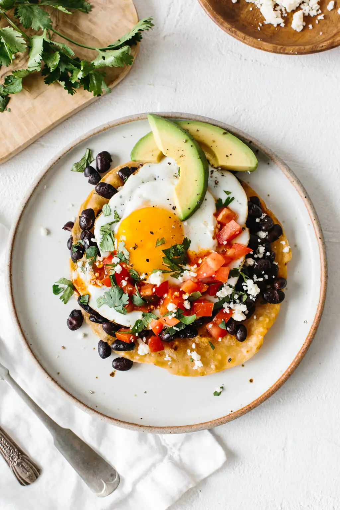

Scott's Huevos Rancheros

Huevos Rancheros
Huevos rancheros is an authentic Mexican breakfast recipe that is hearty, rich in flavor, and a delicious way to start your morning.
It is prepared from a freshly fried tortilla topped with a sunny side up egg, fresh salsa, beans, avocado, and a sprinkle of cheese.
Ingredients
- Flour Tortilla
- Avacado
- Black Beans
- Salsa
- Cojita Cheese
- Hot Sauce
- Eggs
- Salt and Pepper
Back Home
Steps
- Fry the tortilla in a small skillet with oil on medium heat. Cook for about 30 seconds on each side until it gets slightly crispy.
- Fry the egg in the same pan until it is cooked to your liking.
- Add the salsa (diced tomatoes and cilantro) and sprinkle cotija cheese on top.
- Slice avocado and add it onto the plate.